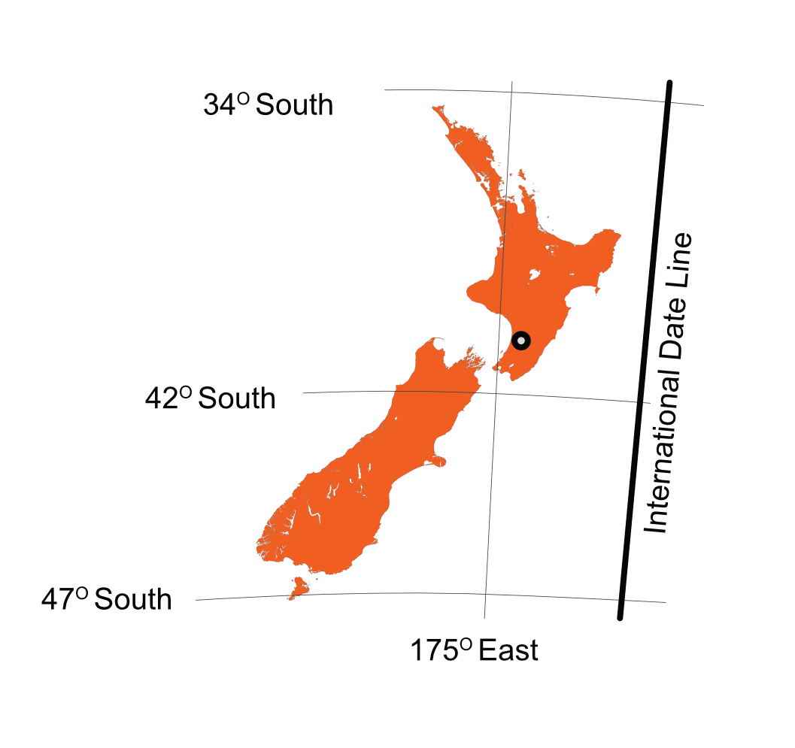
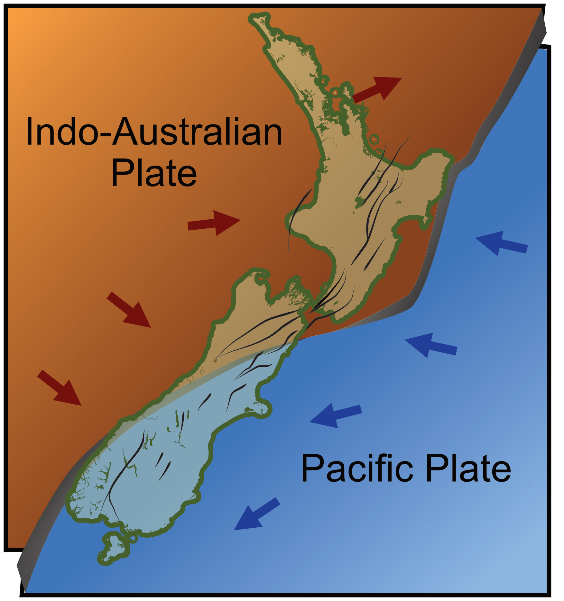
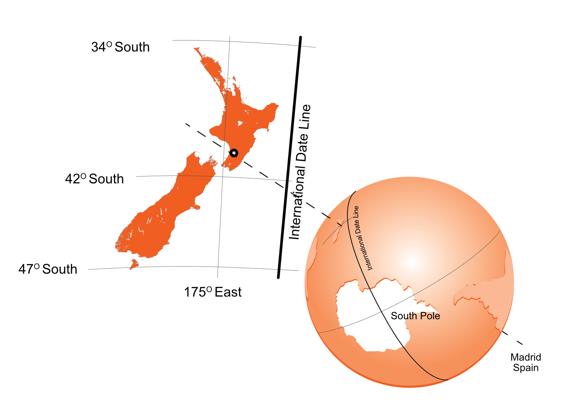

New Zealand is made up of 3 main islands and many smaller islands, situated in the south-western Pacific Ocean — one of the most remote inhabited places on earth.

Tap to see New Zealand's position on the globe
Where in the world
▸ Latitude — 29° to 47°15' South
▸ Longitude — 166°30' to 178°30' East
▸ Same latitude & longitude in the Southern Hemisphere as Spain and Portugal are in the Northern Hemisphere
▸ Total land area 268,680 sq km — population 5,400,000
By Comparison — the UK
Land area: 244,820 sq km — almost identical to New Zealand
Population: 70,000,000 — nearly 13 times more people in the same space
· · ·
200 million years ago
New Zealand started life about 200 million years ago as part of Gondwana — a super-continent made up of what became India, Africa, South America, Australia and Antarctica. As the continents broke up and rotated, New Zealand became a land of its own about 70 million years ago, slowly twisting, shaking and erupting its way to what we have today.
New Zealand sits on two continental plates — the Pacific and the Indo-Australian — and the results of that are impossible to ignore.
· · ·
The North Island
In the North Island the two plates are moving apart — creating a subduction zone where volcanic and geothermal activity dominates. The volcanic cones dotted across the island are the result, as is the famous geothermal activity that Rotorua and Taupo are known for.
Volcanic activity also brings ash — not a bonus at the time of an eruption (just ask the pilots navigating around Ruapehu's eruption in 1994!), but over time the ash becomes part of the soil and creates a very rich and fertile land. That is why New Zealand still has such lush vegetation and forests today.

Tap to enlarge — the Pacific and Indo-Australian plates
· · ·
The South Island
The South Island is not volcanic. Here the Pacific plate is moving up and over the Indo-Australian plate — and instead of lava, it is the earth's crust itself being pushed upward. The result is the Southern Alps.
The Southern Alps
Not formed by volcanic activity — but by the raw force of two continental plates colliding.
The Southern Alps are literally the edge of the Pacific Plate — pushed skyward over millions of years.
